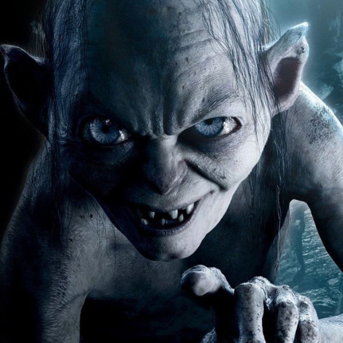

-
Gandalf, o Cinzento
O mago errante e sábio, sempre um passo à frente nas batalhas contra as trevas. Gandalf é um guia para os povos livres, portador de grande poder e defensor incansável da luz na Terra Média.
ATK/ 4800 DEF/ 3500 -
Aragorn, o Rei Exilado
/>O herdeiro de Isildur, nascido para reinar mas vivendo como um guardião nas sombras. Aragorn é um líder nobre e um guerreiro destemido, pronto para lutar pela liberdade e pela união da Terra Média.
ATK/ 3200 DEF/ 2000 -
Legolas, o Guardião da Floresta
Um príncipe elfo de Floresta das Trevas, cuja mira é tão precisa quanto sua lealdade é inabalável. Legolas é um mestre arqueiro, gracioso e letal, que nunca hesita em proteger seus aliados.
ATK/ 2600 DEF/ 2300 -
Gimli, o Anão Guerreiro

Um anão teimoso e de grande bravura, descendente de uma linhagem nobre. Gimli é um guerreiro feroz e leal, sempre pronto para defender seus companheiros com sua machado poderoso e sua vontade indomável.
ATK/ 3500 DEF/ 3000 -
Sauron, o Senhor do Escuro
O mal supremo da Terra Média, criador do Anel Único e dominador das forças da escuridão. Sauron busca controlar todos os povos livres com sua vontade implacável e poder devastador.
ATK/ 3400 DEF/ 2400 -
O Anel Único
O artefato mais poderoso criado por Sauron, capaz de conceder imenso poder a quem o possui, mas ao custo de sua própria alma. O Anel corrompe até os corações mais puros, causando destruição e ganância por onde passa.
ATK/ 6000 DEF/ 5800 -
Gollum, o Esquivo
Uma criatura torturada e deformada pelo poder do Anel, dividida entre sua antiga humanidade como Sméagol e sua obsessão pelo 'precioso'. Gollum é traiçoeiro, mas também indispensável na jornada do Anel.
ATK/ 2900 DEF/ 2100